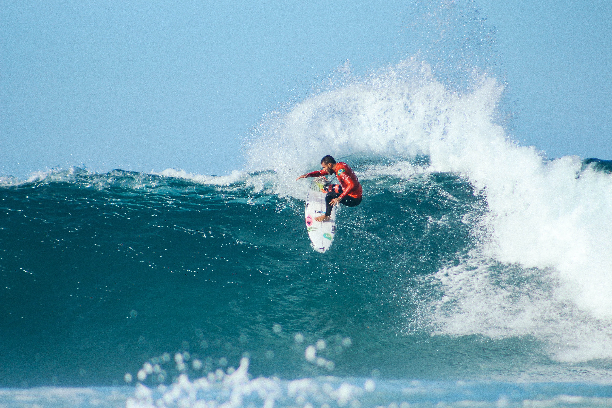

Surfing is a surface water pastime in which the wave rider, referred to as a surfer, rides on the forward part, or face, of a moving wave, which usually carries the surfer towards the shore. 
Waves suitable for surfing are primarily found in the ocean, but can also be found in lakes or rivers in the form of a standing wave or tidal bore. However, surfers can also utilize artificial waves such as those from boat wakes and the waves created in artificial wave pools.